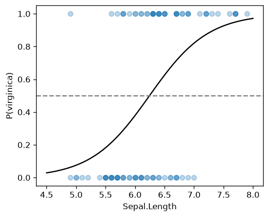
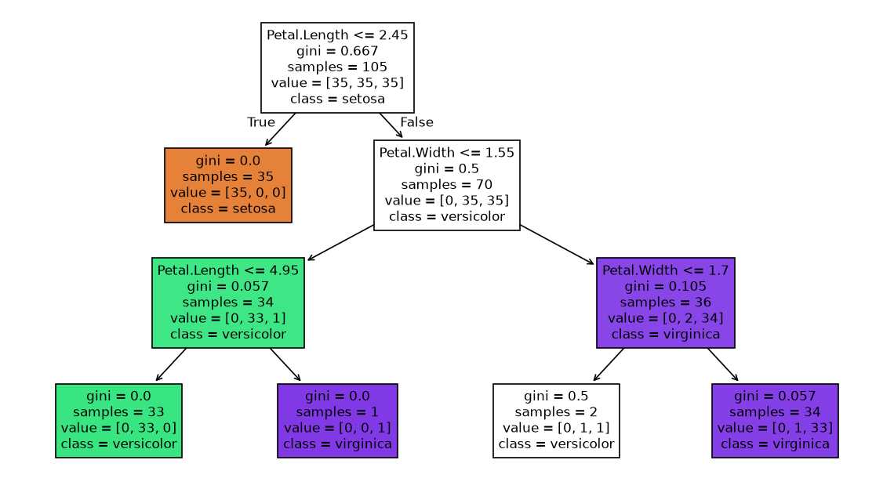
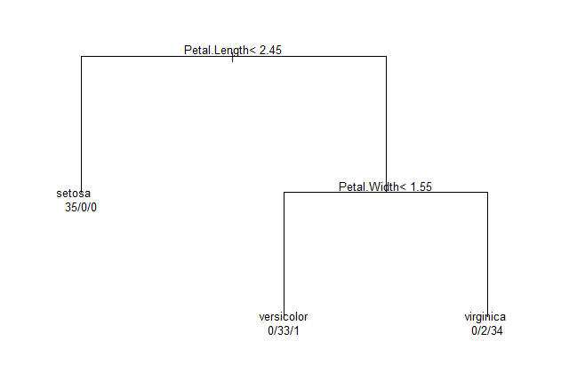

[10주차] 분류 분석 (1): 데이터 분할, 로지스틱 회귀, 의사결정나무
빅데이터개론
10주차
분류 분석 (1): 데이터 분할, 로지스틱 회귀, 의사결정나무
2027학년도 「빅데이터개론」의 준비 중인 교재입니다. 편집 상태를 검토하기 위해 미리 공개한 것으로, 수업 전에 내용과 순서가 바뀔 수 있습니다.
학사 12주차 · 교재 10 · 3부 데이터 분석 · ADsP 3과목 데이터분석 > 정형 데이터 마이닝 (데이터 마이닝 개요, 분류분석)
통계분석(교재 06~09)에 이어 이 장부터 정형 데이터 마이닝을 다룬다. 데이터 마이닝은 많은 자료에서 쓸모 있는 규칙과 관계를 찾아내는 일이고, 그 가운데 대상을 미리 정해진 범주로 가르는 것이 분류 분석이다. 이 장은 데이터 마이닝의 개요, 자료를 나누어 모형을 만들고 확인하는 방법, 분류 기법 가운데 로지스틱 회귀와 의사결정나무를 다룬다.
시험은 용어의 구분(지도 학습과 비지도 학습, 홀드아웃과 교차 검증과 붓스트랩, 알고리즘과 분리 기준의 짝)을 묻고, 오즈와 지니 지수 같은 값을 계산하게 하며, 로지스틱 회귀의 계수를 해석하게 한다. 로지스틱 회귀의 결과표는 교재 07의 회귀 결과표와 읽는 법이 닮았으므로 달라지는 곳만 익히면 된다. 모형의 평가 지표, 앙상블, 인공신경망은 교재 11에서 다룬다.
학습 목표
- 데이터 마이닝의 기능을 구분하고, 기법을 지도 학습과 비지도 학습으로 나눈다.
- 훈련용·검증용·평가용 자료의 역할과 홀드아웃, k-겹 교차 검증, 붓스트랩의 차이를 설명하고, 과대적합을 정분류율(정확도)로 판단한다.
- 로지스틱 회귀의 계수를 오즈비로 바꾸어 해석한다.
- 의사결정나무의 그림을 읽고, 지니 지수와 엔트로피 지수를 계산한다.
- R의
glm()요약 출력과rpart나무 출력에서 시험이 묻는 값을 찾는다.
준비 사항
| 항목 | 내용 |
|---|---|
| 실습 노트북 | ADsP_10주차_실습_학생용.ipynb. 절의 이름은 「따라 하기 1」~「따라 하기 4」와 「중심 실습」이다 |
| 자료 | iris.csv. 붓꽃 150송이의 꽃받침과 꽃잎을 잰 표다. 자료 폴더의 위치는 노트북 첫 코드 셀의 DATA에 적혀 있다 |
| 앞 장과의 연계 | 교재 07의 회귀 결과표(계수, 표준 오차, 유의 확률, AIC)와 교재 06의 층화 추출을 전제로 한다 |
| 실습 환경 | 접속과 자료를 받는 방법은 부록 A에 있다 |
1. 데이터 마이닝 개요
1.1 데이터 마이닝의 뜻
데이터 마이닝은 대량의 자료에서 겉으로 드러나지 않는 규칙, 관계, 유형을 찾아내어 의사결정에 쓰는 과정이다. 통계 분석은 가설을 먼저 세우고 자료로 검정하는 데 무게를 둔다. 데이터 마이닝은 가설을 세우지 않고 자료에서 쓸 만한 규칙을 찾아내며, 그 규칙이 새 자료에도 맞는지를 확인하는 데 무게를 둔다. 두 분야는 회귀 분석 같은 기법을 함께 쓰므로 경계가 뚜렷하지는 않다. 데이터 마이닝에서는 종속 변수를 목표 변수, 독립 변수를 입력 변수라고도 부른다.
1.2 데이터 마이닝의 기능
| 기능 | 하는 일 | 예 |
|---|---|---|
| 분류 | 대상을 미리 정해 둔 범주 가운데 하나로 가른다 | 대출 신청자를 상환할 사람과 연체할 사람으로 가른다 |
| 추정 | 알려지지 않은 연속형 값을 추측한다 | 회원의 가구 소득을 추측한다 |
| 예측 | 미래의 범주나 값을 미리 짐작한다. 방법은 분류나 추정과 같고, 대상이 미래라는 점이 다르다 | 다음 달에 해지할 가입자를 짐작한다 |
| 연관 분석 | 함께 일어나는 일들 사이의 규칙을 찾는다. 장바구니 분석이라고도 한다 | 한 영수증에 함께 찍히는 상품의 짝을 찾는다 |
| 군집 | 미리 정한 범주 없이 비슷한 대상끼리 묶는다 | 이용 기록이 비슷한 회원끼리 묶는다 |
| 기술 | 자료가 가진 특징을 요약하여 설명한다 | 지역별 판매의 특징을 요약한다 |
분류와 군집은 대상을 집단으로 나눈다는 점이 같아 혼동하기 쉽다. 분류는 범주가 미리 정해져 있고 각 대상의 범주를 아는 자료로 규칙을 만든다. 군집은 범주가 정해져 있지 않다.
1.3 지도 학습과 비지도 학습
기법은 자료에 정답(목표 변수)이 있는가에 따라 둘로 나눈다. 지도 학습은 정답이 든 자료로 입력 변수와 정답 사이의 규칙을 익히고, 정답을 모르는 새 자료의 정답을 맞힌다. 비지도 학습은 정답 없이 자료의 구조나 유형을 찾는다.
| 구분 | 지도 학습 | 비지도 학습 |
|---|---|---|
| 목표 변수 | 있다 | 없다 |
| 하는 일 | 분류, 추정, 예측 | 군집, 연관 분석, 기술, 차원 축소 |
| 기법 | 회귀 분석, 로지스틱 회귀, 의사결정나무, 인공신경망, k-최근접 이웃, 서포트 벡터 머신, 판별 분석, 앙상블(배깅, 부스팅, 랜덤 포레스트) | k-평균 군집, 계층적 군집, 자기조직화 지도(SOM), 연관 규칙 분석, 주성분 분석 |
| 이 교재의 장 | 07, 10, 11 | 08, 12 |
1.4 데이터 마이닝의 추진 단계
| 순서 | 단계 | 하는 일 |
|---|---|---|
| 1 | 목적 설정 | 무엇을 얻으려고 분석하는지를 분명히 정한다. 목적에 따라 쓸 기법과 필요한 자료가 정해진다 |
| 2 | 데이터 준비 | 고객 정보, 거래 내역 등 필요한 자료를 모은다. 자료를 정제하여 품질을 확보하고, 모자라면 보강한다 |
| 3 | 데이터 가공 | 목표 변수를 정의하고, 자료를 기법과 도구에 맞는 모양으로 바꾼다 |
| 4 | 기법 적용 | 준비한 자료에 데이터 마이닝 기법을 적용하여 정보를 뽑아낸다 |
| 5 | 검증 | 뽑아낸 정보와 모형을 확인한다. 가장 알맞은 모형을 고르고, 업무에 적용했을 때의 기대 효과를 알린다 |
따라 하기
노트북의 「따라 하기 1」을 실행한다. 이 장의 자료 iris를 읽고 분석 과제의 종류를 정한다.
iris = pd.read_csv(DATA + "iris.csv")
print(iris.shape)
print(iris.head())(150, 5)
Sepal.Length Sepal.Width Petal.Length Petal.Width Species
0 5.1 3.5 1.4 0.2 setosa
1 4.9 3.0 1.4 0.2 setosa
2 4.7 3.2 1.3 0.2 setosa
3 4.6 3.1 1.5 0.2 setosa
4 5.0 3.6 1.4 0.2 setosa열은 꽃받침의 길이와 너비(Sepal.Length, Sepal.Width), 꽃잎의 길이와 너비(Petal.Length, Petal.Width), 품종(Species)이다. 길이와 너비의 단위는 cm다.
- 확인 1
iris.shape가(150, 5)로 나왔다.
다음 셀은 품종별 건수를 세고, 품종별로 네 입력 변수의 평균을 구한다.
Sepal.Length Sepal.Width Petal.Length Petal.Width
Species
setosa 5.01 3.43 1.46 0.25
versicolor 5.94 2.77 4.26 1.33
virginica 6.59 2.97 5.55 2.03- 확인 2 품종별 건수가
setosa,versicolor,virginica모두 50으로 나왔다. - 확인 3
Petal.Length의 평균이setosa1.46,versicolor4.26,virginica5.55로 나왔다.
출력을 보고 다음을 정한다. 품종을 알고 있는 자료로 품종을 맞히는 규칙을 만드는 일은 분류이고, 목표 변수 Species가 있으므로 지도 학습이다. Species 열을 지우고 치수가 비슷한 꽃끼리 묶는 일은 군집이고 비지도 학습이다. 꽃잎의 평균은 품종마다 크게 다르고 꽃받침의 평균은 덜 다르다. 꽃잎 변수가 품종을 잘 가를 것이라고 짐작할 수 있으며, 5절의 나무가 이 짐작을 확인한다.
2. 데이터 분할과 과대적합
2.1 훈련용, 검증용, 평가용 자료
모형을 만든 자료로 그 모형의 성능을 재면 성능이 실제보다 좋게 나온다. 모형이 이미 본 자료이기 때문이다. 그래서 자료를 나누어, 일부로 모형을 만들고 나머지로 성능을 확인한다.
| 자료 | 역할 |
|---|---|
| 훈련용 자료 | 모형을 만드는 데 쓴다 |
| 검증용 자료 | 만든 모형이 과대적합이나 과소적합이 아닌지 확인하고, 모형을 조정하는 데 쓴다 |
| 평가용 자료 | 다 만든 모형의 성능을 마지막으로 평가하는 데 쓴다. 모형을 만들거나 조정하는 데 쓰지 않은 자료다 |
나누는 비율에 정해진 규칙은 없다. 통계 학습의 교과서인 Hastie 외의 『The Elements of Statistical Learning』은 훈련용 50%, 검증용과 평가용 25%씩을 전형적인 예로 든다. 국내 수험 대비 자료에서는 50%, 30%, 20%의 예가 쓰인다. 자료가 적으면 두 부분으로만 나눈다. 이 장의 실습은 150송이를 훈련용 70%와 검증용 30%로 나눈다.
2.2 홀드아웃, 교차 검증, 붓스트랩
| 방법 | 나누는 방식 | 특징 |
|---|---|---|
| 홀드아웃 | 자료를 무작위로 두 부분으로 나누어, 한쪽으로 모형을 만들고 다른 쪽으로 성능을 확인한다 | 한 번만 나누므로 간단하다. 어떻게 나뉘었는가에 따라 결과가 달라진다 |
| k-겹 교차 검증 | 자료를 크기가 같은 k개의 조각으로 나눈다. 조각 하나를 검증용으로, 나머지 k-1개를 훈련용으로 쓰는 일을 조각을 바꾸어 가며 k번 되풀이하고, k번의 성능을 평균한다 | 모든 자료가 한 번씩 검증용으로 쓰인다. 모형을 k번 만들어야 한다 |
| 붓스트랩 | 자료 n개에서 복원 추출로 n개를 뽑아 훈련용으로 쓰고, 한 번도 뽑히지 않은 자료를 검증용으로 쓴다 | 자료의 수가 적을 때 쓴다. 같은 자료가 훈련용에 여러 번 들어갈 수 있다 |
5-겹 교차 검증에서는 조각 다섯 개가 차례로 한 번씩 검증용이 된다. 자료가 200개이면 한 번의 반복에서 훈련용은 160개, 검증용은 40개다.
복원 추출은 뽑은 자료를 다시 넣고 뽑는 방식이다. 자료 하나가 한 번의 추출에서 뽑히지 않을 확률은 1 - 1/n이고, n번 모두 뽑히지 않을 확률은 이 값을 n번 곱한 값이다. n이 크면 이 값은 1/e ≈ 0.368에 가까워진다. 그러므로 붓스트랩에서는 전체 자료의 약 36.8%가 한 번도 뽑히지 않아 검증용이 되고, 약 63.2%가 훈련용에 한 번 이상 들어간다.
2.3 과대적합과 과소적합
분류 모형의 성능을 재는 가장 단순한 값은 정분류율(정확도)이다. 전체 자료 가운데 모형이 범주를 맞게 분류한 자료의 비율이다. 다른 평가 지표는 교재 11에서 다룬다.
모형이 훈련용 자료에 지나치게 맞추어져, 훈련용 자료에서는 성능이 높지만 새 자료에서는 성능이 떨어지는 상태를 과대적합이라 한다. 모형이 자료의 일반적인 규칙뿐 아니라 훈련용 자료에만 있는 우연한 특징까지 익혔기 때문이다. 반대로 모형이 지나치게 단순하여 자료의 규칙을 제대로 익히지 못한 상태를 과소적합이라 한다.
| 구분 | 과소적합 | 알맞은 적합 | 과대적합 |
|---|---|---|---|
| 모형 | 지나치게 단순하다 | 지나치게 복잡하다 | |
| 훈련용 자료의 성능 | 낮다 | 높다 | 매우 높다 |
| 검증용 자료의 성능 | 낮다 | 훈련용과 비슷하게 높다 | 훈련용보다 뚜렷이 낮다 |
과대적합은 훈련용 자료의 성능만 보아서는 알 수 없다. 훈련용 자료와 검증용 자료의 성능을 견주어 판단한다.
따라 하기
노트북의 「따라 하기 2」를 실행한다. 입력 변수 넷을 X에, 목표 변수를 y에 담고 홀드아웃으로 나눈다.
X = iris[["Sepal.Length", "Sepal.Width", "Petal.Length", "Petal.Width"]]
y = iris["Species"]
X_train, X_valid, y_train, y_valid = train_test_split(X, y, test_size=0.3, random_state=42, stratify=y)
print(X_train.shape, X_valid.shape)(105, 4) (45, 4)| 적은 것 | 뜻 |
|---|---|
test_size=0.3 |
전체의 30%를 검증용으로 떼어 낸다. 150송이 가운데 45송이다 |
random_state=42 |
무작위로 나누는 방법을 고정한다. 같은 수를 적으면 누가 실행해도 똑같이 나뉜다. 42라는 수 자체에는 뜻이 없다 |
stratify=y |
품종의 비율이 훈련용과 검증용에서 같게 나눈다. 층화 추출이다(교재 06) |
X_train, y_train / X_valid, y_valid |
훈련용 자료의 입력 변수와 목표 변수 / 검증용 자료의 입력 변수와 목표 변수 |
이름 X_valid, y_valid는 검증용 자료를 뜻한다. 이 장은 평가용 자료를 따로 두지 않는다.
- 확인 4
X_train과X_valid의 모양이(105, 4)와(45, 4)로 나왔다. - 확인 5
y_train은 품종마다 35송이,y_valid는 품종마다 15송이로 나왔다.
이어지는 두 셀은 붓스트랩을 흉내 낸다. 150송이의 행 번호 가운데에서 복원 추출로 150번 뽑고, 한 번 이상 뽑힌 행의 수를 센다.
rng = np.random.default_rng(42) # 바꾸어 볼 값: 42 대신 다른 정수
idx = rng.integers(0, 150, size=150) # 0~149 가운데에서 복원 추출로 150번 뽑은 행 번호
print(idx[:10])
print(len(np.unique(idx)), round(len(np.unique(idx)) / 150, 3))[ 13 116 98 65 64 128 12 104 30 14]
91 0.607for n in [10, 150, 10000]:
print(n, round((1 - 1 / n) ** n, 3), round(1 - (1 - 1 / n) ** n, 3))10 0.349 0.651
150 0.367 0.633
10000 0.368 0.632for 문은 「파이썬 기초」에서 익힌 반복문이다. 둘째 셀의 가운데 값이 n번 모두 뽑히지 않을 확률이고, 오른쪽 값이 한 번 이상 뽑힐 확률이다.
- 확인 6 한 번 이상 뽑힌 행이 91개, 비율이 0.607로 나왔다.
- 확인 7 n이 10000일 때 뽑히지 않을 확률이 0.368, 뽑힐 확률이 0.632로 나왔다.
한 번의 추출에서 얻은 0.607은 이론값 0.633과 조금 다르다. 시드를 바꾸어 다시 실행하면 0.6 근처의 다른 값이 나온다. 이론값은 평균적으로 기대되는 비율이다.
3. 로지스틱 회귀
3.1 범주형 종속 변수
교재 07의 회귀 분석은 종속 변수가 연속형이었다. 종속 변수가 “예 또는 아니요”처럼 범주형이면 그 방법을 그대로 쓸 수 없다. 직선은 위아래로 끝없이 뻗으므로 예측값이 0보다 작거나 1보다 커질 수 있기 때문이다. 로지스틱 회귀는 종속 변수가 범주형일 때 쓰는 회귀 모형이며, 대상이 한 범주에 속할 확률을 0과 1 사이의 값으로 예측한다. 범주가 둘인 경우를 기본으로 하고, 셋 이상이면 다항 로지스틱 회귀를 쓴다.
이 절에서는 versicolor와 virginica 두 품종(100송이)만 쓴다. virginica이면 1, versicolor이면 0인 열을 종속 변수로 삼고, 독립 변수는 꽃받침 길이 하나로 한다.
3.2 오즈와 로짓
어떤 일이 일어날 확률을 p라 할 때, 일어날 확률을 일어나지 않을 확률로 나눈 값을 오즈라 한다.
오즈 = p ÷ (1 - p)
확률이 0.8이면 오즈는 0.8 ÷ 0.2 = 4다. 일어날 가능성이 일어나지 않을 가능성의 4배라는 뜻이다. 오즈에 자연로그를 씌운 값을 로짓이라 한다.
| 확률 p | 오즈 | 로짓 |
|---|---|---|
| 0.2 | 0.25 | -1.386 |
| 0.5 | 1 | 0 |
| 0.8 | 4 | 1.386 |
확률은 0과 1 사이의 값이고, 오즈는 0 이상의 값이며, 로짓은 음수와 양수의 모든 값을 가진다. 로지스틱 회귀는 범위에 제한이 없는 로짓을 독립 변수의 선형식으로 나타낸다.
로짓 = 절편 + 기울기 × 독립 변수
p = 1 ÷ (1 + exp(-(절편 + 기울기 × 독립 변수)))
둘째 식은 첫째 식을 확률에 대하여 푼 것이며, exp는 지수 함수다. 이 식의 그래프는 S자 모양의 곡선이고, 독립 변수가 어떤 값이어도 p는 0과 1 사이에 있다.
3.3 결과표의 해석
smf.logit으로 모형을 적합한다. 식을 적는 방법은 교재 07의 smf.ols와 같다.
| 항목 | 뜻 |
|---|---|
Method: MLE |
계수를 최대우도법으로 추정했다는 표시다(3.5절) |
Log-Likelihood |
이 모형의 로그 우도 |
LL-Null |
절편만 있는 모형의 로그 우도 |
LLR p-value |
모형 전체의 유의 확률. 회귀 결과표의 Prob (F-statistic)에 해당한다 |
z |
계수를 표준 오차로 나눈 값. 회귀 결과표의 t에 해당한다 |
P>|z| |
계수의 유의 확률. “이 계수는 0이다”라는 귀무 가설을 검정한다 |
결정 계수와 F 통계량은 없다. 읽는 순서는 회귀 결과표와 같다. 모형이 유의한가(LLR p-value), 계수가 유의한가(P>|z|), 계수의 부호는 무엇인가를 차례로 본다. Pseudo R-squ.는 선형 회귀의 결정 계수와 뜻이 다르며 이 교재에서 해석하지 않는다.
3.4 계수와 오즈비
로지스틱 회귀의 계수는 독립 변수가 1 늘 때 로짓이 변하는 양이다. 로짓은 뜻을 떠올리기 어려우므로, 계수에 지수 함수를 씌워 오즈의 변화로 바꾸어 읽는다. 이 값 exp(계수)를 오즈비라 한다. 독립 변수가 1 늘면 오즈가 exp(계수)배가 된다.
계수가 양수이면 오즈비는 1보다 크고, 독립 변수가 늘 때 그 범주에 속할 확률이 높아진다. 계수가 음수이면 오즈비는 0과 1 사이이고 확률이 낮아진다. 계수가 0이면 오즈비는 1이고 독립 변수와 관계가 없다. 오즈비는 오즈가 몇 배가 되는지를 말하며, 확률이 몇 배가 되는지를 말하지 않는다. 절편의 오즈비는 독립 변수가 0일 때의 오즈이므로 대개 해석하지 않는다.
3.5 선형 회귀와의 차이
| 구분 | 선형 회귀 | 로지스틱 회귀 |
|---|---|---|
| 종속 변수 | 연속형 | 범주형 |
| 식의 왼쪽 | 종속 변수의 값 | 로짓(오즈의 로그) |
| 계수의 추정 | 최소제곱법 | 최대우도법 |
| 계수의 검정 | t 검정 | z 검정 |
| 모형의 검정 | F 검정 | 이탈도의 차이를 쓰는 카이제곱 검정 |
| 모형이 자료에 맞는 정도 | 잔차 제곱합, 결정 계수 | 이탈도 |
| 계수의 해석 | 독립 변수가 1 늘 때 종속 변수가 변하는 양 | 독립 변수가 1 늘 때 오즈가 exp(계수)배가 된다 |
최대우도법은 관측된 자료가 나올 가능성(우도)이 가장 커지는 계수를 고르는 방법이다. 최소제곱법처럼 한 번의 계산으로 답이 나오지 않으므로 계산을 되풀이하여 답에 다가간다. 독립 변수가 두 범주를 빈틈없이 갈라 놓는 자료에서는 계수를 키울수록 우도가 계속 커지므로 계수가 정해지지 않는다. 이를 완전 분리라 한다.
이탈도는 로그 우도에 -2를 곱한 값이며(R의 설명서는 상수를 더한 값으로 정의한다), 모형이 자료에서 벗어난 정도를 나타낸다. 작을수록 모형이 자료에 잘 맞으며 선형 회귀의 잔차 제곱합에 해당한다. 절편만 있는 모형의 이탈도에서 독립 변수를 넣은 모형의 이탈도를 뺀 값이 크면, 넣은 독립 변수가 모형에 보탬이 된다. 이 감소량을 카이제곱 분포로 검정한 유의 확률이 LLR p-value다. AIC는 이탈도에 추정한 계수의 수의 2배를 더한 값이며, 교재 07에서와 같이 작을수록 좋은 모형이다.
로지스틱 회귀는 선형 회귀를 넓힌 일반화 선형 모형의 하나다. R에서 로지스틱 회귀를 실행하는 함수 glm의 이름이 여기에서 왔다(6절).
따라 하기
노트북의 「따라 하기 3」을 실행한다. 첫 셀은 두 품종만 고르고 0과 1의 열을 만든다. 식에 쓸 수 있도록 점이 없는 이름의 열 SepalLength도 만든다.
- 확인 8 고른 자료의 모양이
(100, 7)이고,virginica열은 0과 1이 50송이씩으로 나왔다.
둘째 셀은 모형을 적합하고 결과표를 출력한다.
logit1 = smf.logit("virginica ~ SepalLength", data=two).fit(disp=0) # disp=0: 계산 과정의 안내문을 내지 않는다
print(logit1.summary()) Logit Regression Results
==============================================================================
Dep. Variable: virginica No. Observations: 100
Model: Logit Df Residuals: 98
Method: MLE Df Model: 1
...
converged: True LL-Null: -69.315
Covariance Type: nonrobust LLR p-value: 1.162e-07
===============================================================================
coef std err z P>|z| [0.025 0.975]
-------------------------------------------------------------------------------
Intercept -12.5708 2.907 -4.325 0.000 -18.268 -6.873
SepalLength 2.0129 0.465 4.325 0.000 1.101 2.925
===============================================================================덜어 낸 자리(...)에는 실행 날짜와 Log-Likelihood: -55.273이 있다. LLR p-value가 0.05보다 작으므로 모형은 유의하고, SepalLength의 유의 확률도 0.05보다 작으므로 계수는 유의하다. 계수가 양수이므로 꽃받침이 길수록 virginica일 확률이 높다. z는 2.0129 ÷ 0.465 ≈ 4.33이다. 추정한 식은 “로짓 = -12.5708 + 2.0129 × 꽃받침 길이”다.
- 확인 9
SepalLength의coef가 2.0129,P>|z|가 0.000,LLR p-value가 1.162e-07로 나왔다.
다음 셀들은 오즈비, 이탈도와 AIC를 출력한다.
Intercept 0.0000
SepalLength 7.4852
dtype: float64
138.63 110.55
114.55꽃받침 길이가 1cm 늘면 virginica일 오즈가 약 7.49배가 된다. 절편만 있는 모형의 이탈도는 -2 × (-69.315) = 138.63이고, 이 모형의 이탈도는 110.55다. 꽃받침 길이를 넣어 이탈도가 28.08 줄었다. AIC는 110.55 + 2 × 2 = 114.55다.
- 확인 10
SepalLength의 오즈비가 7.4852로 나왔다. - 확인 11 두 이탈도가 138.63과 110.55, AIC가 114.55로 나왔다.
이어서 꽃받침 길이가 5.5, 6.0, 7.0인 붓꽃이 virginica일 확률을 예측하고, 그 확률을 오즈로 바꾼다.
0 0.182
1 0.379
2 0.820
dtype: float64
0 0.223
1 0.611
2 4.571
dtype: float64
7.4852꽃받침 길이가 6.0에서 7.0으로 1 늘 때 확률은 0.379에서 0.820으로 바뀌었다. 이는 7.49배가 아니다. 오즈는 0.611에서 4.571로 바뀌었고, 두 오즈의 비가 정확히 오즈비 7.4852다. 오즈비가 오즈의 배수라는 것을 숫자로 확인한 것이다.
- 확인 12 예측 확률이 0.182, 0.379, 0.820이고, 두 오즈의 비가 7.4852로 나왔다.

그림의 위쪽 점들은 virginica(1), 아래쪽 점들은 versicolor(0)이고, 곡선은 예측 확률이다. 예측 확률이 0.5 이상이면 virginica로, 0.5 미만이면 versicolor로 분류하는 것이 기본이다. 확률이 0.5가 되는 곳은 로짓이 0이 되는 곳이므로 꽃받침 길이가 12.5708 ÷ 2.0129 ≈ 6.25일 때다. 두 품종의 점이 가로축에서 넓게 겹쳐 있으므로 꽃받침 길이 하나로는 두 품종을 깨끗하게 가르지 못한다.
4. 의사결정나무
4.1 구조
의사결정나무는 “꽃잎 길이가 2.45 이하인가”와 같은 물음으로 자료를 거듭 나누어 가는 모형이다. 나눈 모양을 그리면 나무를 거꾸로 세운 꼴이 된다. 목표 변수가 범주형이면 분류나무, 연속형이면 회귀나무라 한다.
| 용어 | 뜻 |
|---|---|
| 뿌리 마디 | 나무가 시작되는 맨 위의 마디. 전체 자료가 들어 있다 |
| 부모 마디, 자식 마디 | 분리되기 전의 마디가 부모 마디이고, 분리되어 생긴 마디가 자식 마디다 |
| 중간 마디 | 부모 마디도 있고 자식 마디도 있는 마디 |
| 끝 마디 | 더 분리되지 않는 마디. 끝 마디의 수만큼 분류 규칙이 생긴다 |
| 가지 | 뿌리 마디에서 끝 마디까지 이어진 마디들 |
| 깊이 | 뿌리 마디에서 끝 마디에 이르기까지 거치는 분리의 횟수 |
새 자료는 뿌리 마디에서 출발하여 물음의 답에 따라 아래로 내려가고, 도착한 끝 마디에서 가장 많은 범주로 분류된다.
4.2 분리 기준
마디를 나눌 때에는 자식 마디 안의 자료가 될 수 있는 대로 한 범주로 모이게 나눈다. 한 범주의 자료만 든 마디를 순수하다고 하고, 여러 범주가 섞인 정도를 불순도라 한다. 분리 기준은 어느 변수의 어느 값에서 나눌지를 정하는 잣대이며, 목표 변수의 종류에 따라 다르다.
| 목표 변수 | 분리 기준 | 고르는 분리 |
|---|---|---|
| 범주형 | 카이제곱 통계량의 유의 확률 | 유의 확률이 가장 작은 분리 |
| 범주형 | 지니 지수 | 지니 지수를 가장 많이 줄이는 분리 |
| 범주형 | 엔트로피 지수 | 엔트로피 지수를 가장 많이 줄이는 분리 |
| 연속형 | 분산분석에서 F 통계량의 유의 확률 | 유의 확률이 가장 작은 분리 |
| 연속형 | 분산 감소량 | 분산을 가장 많이 줄이는 분리 |
유의 확률이 작다는 것은 자식 마디들 사이의 차이가 뚜렷하다는 뜻이다. 지니 지수와 엔트로피 지수는 불순도를 재는 값이며 작을수록 마디가 순수하다.
4.3 지니 지수와 엔트로피 지수의 계산
마디에 든 자료에서 각 범주가 차지하는 비율로 계산한다.
지니 지수 = 1 - (각 범주의 비율을 제곱한 값의 합)
엔트로피 지수 = -(각 범주의 비율 × 그 비율의 밑이 2인 로그)의 합
범주가 둘일 때, 한 범주만 있는 순수한 마디에서는 두 값이 모두 0이다. 두 범주가 반씩 있을 때 가장 커서 지니 지수는 0.5, 엔트로피 지수는 1이다. 엔트로피 지수는 로그가 들어가므로 손으로 계산하기 어렵다. 비율이 0.5나 1인 경우의 값을 기억해 두고, 손 계산은 지니 지수로 익힌다.
분리가 좋은지는 분리한 뒤의 불순도가 얼마나 줄었는가로 판단한다. 분리한 뒤의 불순도는 자식 마디의 지니 지수를 자료의 수로 가중 평균한 값이다. 자료 10개 가운데 범주 A가 6개, 범주 B가 4개인 마디의 지니 지수는 1 - 0.6² - 0.4² = 0.48이다. 이 마디를 나누는 방법 둘을 견준다.
| 계산 | 분리 가 (왼쪽 A 4·B 0, 오른쪽 A 2·B 4) | 분리 나 (양쪽 모두 A 3·B 2) |
|---|---|---|
| 왼쪽 마디의 지니 지수 | 1 - 1² = 0 | 1 - 0.6² - 0.4² = 0.48 |
| 오른쪽 마디의 지니 지수 | 1 - (2/6)² - (4/6)² ≈ 0.444 | 0.48 |
| 가중 평균 | (4/10) × 0 + (6/10) × 0.444 ≈ 0.267 | (5/10) × 0.48 + (5/10) × 0.48 = 0.48 |
| 감소량 = 부모 마디의 지니 지수 - 가중 평균 | 0.48 - 0.267 = 0.213 | 0.48 - 0.48 = 0 |
분리 나의 자식 마디는 범주의 비율이 부모 마디와 같아서 나누어도 얻는 것이 없다. 나무는 분리 가를 고른다.
4.4 알고리즘
의사결정나무를 만드는 알고리즘은 여럿이며, 알고리즘마다 쓰는 분리 기준과 분리의 갈래 수가 다르다.
| 알고리즘 | 범주형 목표 변수 | 연속형 목표 변수 | 분리의 갈래 | 특징 |
|---|---|---|---|---|
| CART | 지니 지수 | 분산 감소량 | 언제나 둘(이진 분리) | 다 키운 나무를 비용 복잡도 가지치기로 줄인다 |
| C4.5와 C5.0 | 엔트로피 지수(정보 이득) | 범주형 입력 변수는 범주의 수만큼(다지 분리) | ID3를 잇는 알고리즘이다. 연속형 입력 변수는 구간으로 나누어 쓴다 | |
| CHAID | 카이제곱 통계량 | F 통계량 | 셋 이상도 가능(다지 분리) | 연속형 입력 변수는 구간으로 나누어 범주로 바꾼 뒤 쓴다. 가지치기를 하지 않고, 유의한 분리가 없으면 성장을 멈춘다 |
이 장에서 쓰는 scikit-learn의 DecisionTreeClassifier와 R의 rpart는 CART 방식이다.
4.5 정지 규칙과 가지치기
나무는 그대로 두면 끝 마디가 모두 순수해질 때까지 자란다. 이렇게 자란 나무는 훈련용 자료를 거의 완벽하게 분류하지만 새 자료에는 잘 맞지 않는다. 과대적합이다. 나무의 크기를 알맞게 하는 방법은 둘이다.
| 방법 | 내용 |
|---|---|
| 정지 규칙 | 더 분리하지 않고 현재의 마디를 끝 마디로 두게 하는 규칙이다. 나무의 최대 깊이, 끝 마디에 들어야 하는 자료의 최소 수, 분리로 줄어야 하는 불순도의 최소량을 정해 둔다 |
| 가지치기 | 다 자란 나무에서 분류에 보탬이 적거나 오류를 키울 위험이 큰 가지를 잘라 내는 일이다 |
실습에서 쓰는 max_depth가 나무의 최대 깊이를 정하는 정지 규칙이다.
4.6 장점과 단점
| 장점 | 단점 |
|---|---|
| 결과를 “만약 ~이면 ~이다”라는 규칙으로 설명할 수 있어 이해하기 쉽다 | 과대적합되기 쉽다 |
| 계산이 단순하여 자료가 많아도 빠르게 만든다 | 훈련용 자료가 조금 바뀌어도 나무의 모양이 크게 달라질 수 있다 |
| 연속형 변수와 범주형 변수를 모두 입력 변수로 쓸 수 있다 | 연속형 변수를 구간으로 끊어 다루므로, 분리 기준값의 경계 가까이에 있는 자료에서 오류가 나기 쉽다 |
| 정규성, 등분산성 같은 가정이 필요 없는 비모수적 방법이다 | 입력 변수 하나하나가 결과에 미치는 영향의 크기를 회귀 계수처럼 수로 말하기 어렵다 |
| 이상값과 쓸모없는 입력 변수의 영향을 덜 받는다 | 한쪽 범주가 매우 많으면 그 범주에 치우친 나무가 만들어진다 |
나무 하나가 불안정하다는 단점을 줄이기 위해 나무 여러 개를 만들어 결과를 모으는 방법이 앙상블이다(교재 11).
따라 하기
노트북의 「따라 하기 4」를 실행한다. 4.3절의 계산을 코드로 되풀이한다.
p1 = 6 / 10 # 바꾸어 볼 값: 5 / 10, 10 / 10 (p2도 함께 바꾼다)
p2 = 4 / 10
gini = 1 - p1**2 - p2**2
entropy = -(p1 * math.log2(p1) + p2 * math.log2(p2))
print(round(gini, 3), round(entropy, 3))0.48 0.971다음 셀은 분리 가와 분리 나의 가중 평균과 감소량을 계산한다.
split A 0.267 0.213
split B 0.48 0.0- 확인 13 지니 지수가 0.48, 엔트로피 지수가 0.971로 나왔다.
- 확인 14 분리 가(
split A)의 감소량이 0.213, 분리 나(split B)의 감소량이 0.0으로 나왔다.
첫 셀의 p1과 p2를 5/10과 5/10으로 바꾸어 두 범주가 반씩일 때의 값(0.5와 1)을 확인한다. 10/10과 0/10으로 바꾸면 log2(0)을 계산할 수 없어 오류가 난다. 비율이 0인 범주는 엔트로피 지수의 합에서 빼고 계산한다는 뜻이다.
5. 중심 실습: 의사결정나무에 의한 분류
따라 하기 2에서 나눈 훈련용 자료로 품종을 분류하는 나무를 만든다. 나무 그림을 읽고, 첫 분리의 지니 지수를 손으로 계산하여 그림의 값과 맞춘다. 검증용 자료로 정분류율을 확인한다.
준비
노트북의 「따라 하기 1」~「따라 하기 4」를 모두 실행한 상태에서 「중심 실습」 절로 간다. X_train, y_train 등의 변수가 「따라 하기 2」에서 만들어지기 때문이다. 노트북을 새로 열었으면 위에서부터 다시 실행한다.
절차
단계 1. 나무의 적합
- 단계 1의 셀을 실행한다. 분리 기준은 지니 지수이고 최대 깊이는 3이다.
- 출력의 앞 값(나무의 깊이)과 뒤 값(끝 마디의 수)을 적는다.
tree = DecisionTreeClassifier(criterion="gini", max_depth=3, random_state=42) # 바꾸어 볼 값: max_depth=1, 2, 5 / criterion="entropy"
tree.fit(X_train, y_train)
print(tree.get_depth(), tree.get_n_leaves())3 5- 확인 15 깊이 3, 끝 마디 5개를 뜻하는
3 5가 나왔다.
단계 2. 나무 그림과 규칙의 해석
- 나무 그림의 셀을 실행한다.
- 아래 표로 뿌리 마디의 값을 읽는다.
- 글로 출력한 규칙(
export_text)을 그림과 견준다. - 아래의 물음 셋에 답한다.

| 줄 | 뿌리 마디의 값 | 뜻 |
|---|---|---|
| 첫째 줄 | Petal.Length <= 2.45 |
이 마디를 나누는 분리 규칙. 참이면 왼쪽, 거짓이면 오른쪽 자식 마디로 간다. 끝 마디에는 이 줄이 없다 |
gini |
0.667 | 이 마디의 지니 지수 |
samples |
105 | 이 마디에 든 자료의 수 |
value |
[35, 35, 35] | 품종별 자료의 수. 순서는 setosa, versicolor, virginica다 |
class |
setosa | 이 마디에서 가장 많은 품종. 수가 같으면 앞의 품종을 적는다 |
상자의 색은 그 마디에서 가장 많은 품종을 나타내고, 색이 진할수록 마디가 순수하다.
|--- Petal.Length <= 2.45
| |--- weights: [35.00, 0.00, 0.00] class: setosa
|--- Petal.Length > 2.45
| |--- Petal.Width <= 1.55
| | |--- Petal.Length <= 4.95
| | | |--- weights: [0.00, 33.00, 0.00] class: versicolor
| | |--- Petal.Length > 4.95
| | | |--- weights: [0.00, 0.00, 1.00] class: virginica
| |--- Petal.Width > 1.55
| | |--- Petal.Width <= 1.70
| | | |--- weights: [0.00, 1.00, 1.00] class: versicolor
| | |--- Petal.Width > 1.70
| | | |--- weights: [0.00, 1.00, 33.00] class: virginica들여 쓴 정도가 깊이다. weights와 class가 적힌 줄이 끝 마디이고, weights는 그림의 value와 같다. 맨 위의 두 줄은 “꽃잎 길이가 2.45 이하이면 setosa로 분류한다”는 규칙이다.
물음은 다음과 같다. (1) 꽃잎 길이가 4.0이고 꽃잎 너비가 1.2인 붓꽃은 어느 품종으로 분류되는가. 뿌리 마디에서부터 거친 분리 규칙을 차례로 적는다. (2) 끝 마디 5개 가운데 지니 지수가 0이 아닌 마디는 몇 개이고, 그 value는 무엇인가. (3) 입력 변수 넷 가운데 이 나무가 쓰지 않은 변수는 무엇인가.
- 확인 16 뿌리 마디에
gini = 0.667,samples = 105,value = [35, 35, 35]가 적혀 있다. - 확인 17 물음 (1)의 붓꽃이
weights: [0.00, 33.00, 0.00] class: versicolor인 끝 마디에 도착하였다.
단계 3. 첫 분리의 지니 지수
- 단계 3의 첫 셀을 실행하여 뿌리 마디의 분리 규칙으로 나눈 두 마디의 품종별 수를 센다.
- 아래 표의 1~5번을 손으로 계산한다. 계산식을 함께 적는다.
- 단계 3의 둘째 셀을 실행하여 손으로 계산한 값과 맞춘다.
- 셋째 셀의 마디별 불순도에서 둘째 분리의 두 자식 마디(마디 3과 6)의 지니 지수를 읽고, 6번과 7번을 계산한다.
| 번호 | 구할 값 | 품종별 자료의 수 | 계산식 | 값 |
|---|---|---|---|---|
| 1 | 뿌리 마디의 지니 지수 | 35, 35, 35 | ||
| 2 | 왼쪽 자식 마디의 지니 지수 | 35, 0, 0 | ||
| 3 | 오른쪽 자식 마디의 지니 지수 | 0, 35, 35 | ||
| 4 | 분리한 뒤의 지니 지수(가중 평균) | |||
| 5 | 지니 지수의 감소량 | |||
| 6 | 둘째 분리(Petal.Width <= 1.55) 뒤의 지니 지수 |
34송이와 36송이 | ||
| 7 | 둘째 분리의 감소량 | 부모 마디 70송이, 지니 지수 0.5 |
- 확인 18 왼쪽 마디에는
setosa35송이, 오른쪽 마디에는versicolor35송이와virginica35송이가 들었다. - 확인 19 손으로 계산한 1~5번이 둘째 셀의 출력
0.667 0.0 0.5,0.333 0.333과 같다.
셋째 셀은 나무가 계산한 마디별 지니 지수를 마디 번호의 순서(0번이 뿌리 마디)로 출력한다.
[0.667 0. 0.5 0.057 0. 0. 0.105 0.5 0.057]- 확인 20 마디 3의 지니 지수가 0.057, 마디 6의 지니 지수가 0.105로 나왔다.
단계 4. 정분류율과 교차표
- 단계 4의 첫 셀을 실행하여 훈련용과 검증용의 정분류율을 적는다.
- 검증용 자료의 교차표에서 잘못 분류된 송이를 찾는다.
- 훈련용 자료의 교차표에서 맞게 분류된 수(대각선)를 더한다.
0.981 0.9778
predicted setosa versicolor virginica
actual
setosa 15 0 0
versicolor 0 14 1
virginica 0 0 15앞의 값이 훈련용, 뒤의 값이 검증용 정분류율이다. 두 값이 비슷하므로 이 나무는 과대적합이 아니다. 교차표는 행이 실제 품종(actual)이고 열이 예측한 품종(predicted)이며, 대각선이 맞게 분류한 수다. 검증용 45송이 가운데 15 + 14 + 15 = 44송이를 맞혔고 44 ÷ 45 ≈ 0.9778이다. 이 표는 교재 11에서 오분류표(혼동 행렬)라는 이름으로 다시 다룬다.
- 확인 21 정분류율이 훈련용 0.981, 검증용 0.9778로 나왔다.
- 확인 22 검증용 교차표에서 실제
versicolor1송이가virginica로 분류되었다. - 확인 23 훈련용 교차표의 대각선이 35, 34, 34로 103송이이고, 103 ÷ 105가 0.981이다.
값을 바꾸어 보기
단계 1의 tree = DecisionTreeClassifier(...) 줄에서 값을 바꾸고, 그 셀부터 단계 4까지 다시 실행한다. 단계 3의 손 계산 셀은 깊이 3의 나무를 기준으로 쓴 것이므로 바꾸지 않는다.
max_depth를 1, 2, 3, 5로 바꾸어 가며 아래 표를 채운다.
max_depth |
끝 마디의 수 | 훈련용 정분류율 | 검증용 정분류율 |
|---|---|---|---|
| 1 | |||
| 2 | |||
| 3 | 5 | 0.981 | 0.9778 |
| 5 |
- 훈련용 정분류율이 가장 높은 깊이와 검증용 정분류율이 가장 높은 깊이를 찾고, 두 깊이가 다른 까닭을 2.3절의 용어로 설명한다.
max_depth=1인 나무는 두 정분류율이 모두 낮다. 나무 그림을 보고 그 까닭을 2.3절의 용어로 설명한다.max_depth를 3으로 되돌리고criterion을"entropy"로 바꾼다. 뿌리 마디의 불순도, 달라진 분리 규칙, 검증용 정분류율을 적는다.
- 확인 24
max_depth=5에서 단계 1의 출력이5 8이고, 정분류율이 훈련용 1.0, 검증용 0.9333으로 나왔다.
완료 기준
| 번호 | 점검 항목 | 점검 방법 | 기준 값 |
|---|---|---|---|
| 1 | 나무의 크기 | 단계 1의 출력 | 3 5 |
| 2 | 첫 분리 규칙 | 나무 그림의 뿌리 마디 | Petal.Length <= 2.45 |
| 3 | 첫 분리의 손 계산(1~5번) | 단계 3의 둘째 셀과 대조 | 0.667, 0, 0.5, 0.333, 0.333 |
| 4 | 둘째 분리의 손 계산(6~7번) | 마디 3과 6의 지니 지수로 가중 평균을 계산 | 약 0.082, 약 0.418 |
| 5 | 정분류율 | 단계 4의 첫 셀 | 훈련용 0.981, 검증용 0.9778 |
| 6 | 깊이별 표 | 값을 바꾸어 보기의 1번 | 깊이 5에서 훈련용 1.0, 검증용 0.9333 |
제출물
- 실행을 마친 노트북
- 단계 3의 표(1~7번)의 계산식과 값
- 값을 바꾸어 보기의 표와 2번 물음에 대한 해석 한 문장. 두 정분류율의 값을 넣어 쓴다.
6. R 출력 해석
같은 분석을 R로 실행한 코드와 출력이다. R을 실행하지 않고 읽는다.
6.1 대응표
| 하는 일 | 파이썬 | R |
|---|---|---|
| 로지스틱 회귀 모형 적합 | smf.logit("virginica ~ SepalLength", data=two).fit() |
glm(virginica ~ Sepal.Length, data = two, family = binomial) |
| 결과표 | logit1.summary() |
summary(m) |
| 오즈비 | np.exp(logit1.params) |
exp(coef(m)) |
| 확률의 예측 | logit1.predict(new) |
predict(m, new, type = "response") |
| 의사결정나무 만들기 | DecisionTreeClassifier(...).fit(X_train, y_train) |
rpart(Species ~ ., data = train) |
| 나무를 글로 출력 | export_text(tree) |
print(fit) |
| 나무 그림 | plot_tree(tree) |
plot(fit), text(fit) |
| 범주의 예측 | tree.predict(X_valid) |
predict(fit, valid, type = "class") |
| 교차표 | pd.crosstab(실제, 예측) |
table(실제, 예측) |
glm은 일반화 선형 모형을 적합하는 함수다. family = binomial을 적으면 로지스틱 회귀가 된다. 이 부분을 적지 않으면 선형 회귀가 되므로, 문항이 “이 코드는 무슨 분석인가”를 물으면 family를 본다. rpart는 의사결정나무를 만드는 패키지이자 함수의 이름이다.
6.2 같은 일을 하는 R 코드
two <- subset(iris, Species != "setosa") # 두 품종 100송이만 고른다
two$virginica <- as.integer(two$Species == "virginica") # virginica이면 1, 아니면 0
m <- glm(virginica ~ Sepal.Length, data = two, family = binomial) # 로지스틱 회귀
summary(m) # 결과표
exp(coef(m)) # 오즈비
predict(m, data.frame(Sepal.Length = c(5.5, 6, 7)), type = "response") # 확률의 예측
library(rpart) # 의사결정나무 패키지를 불러온다
d <- read.csv("iris_split.csv", stringsAsFactors = TRUE) # 파이썬에서 나눈 구분(set 열)이 든 파일
train <- subset(d, set == "train", select = -set) # 훈련용 105송이
valid <- subset(d, set == "valid", select = -set) # 검증용 45송이
fit <- rpart(Species ~ ., data = train) # 나무를 만든다. 점(.)은 나머지 모든 열이다
print(fit) # 나무를 글로 출력한다
plot(fit); text(fit, use.n = TRUE) # 나무 그림
pred <- predict(fit, valid, type = "class") # 검증용 자료의 품종을 예측한다
table(actual = valid$Species, predicted = pred) # 교차표
mean(pred == valid$Species) # 정분류율나무는 파이썬과 같은 훈련용 자료를 쓰도록, 파이썬에서 나눈 결과를 파일(iris_split.csv)로 저장하여 R에서 읽었다.
6.3 출력의 해석 (1): summary(glm())
Call:
glm(formula = virginica ~ Sepal.Length, family = binomial, data = two)
Coefficients:
Estimate Std. Error z value Pr(>|z|)
(Intercept) -12.5708 2.9068 -4.325 1.53e-05 ***
Sepal.Length 2.0129 0.4654 4.325 1.53e-05 ***
---
Signif. codes: 0 '***' 0.001 '**' 0.01 '*' 0.05 '.' 0.1 ' ' 1
(Dispersion parameter for binomial family taken to be 1)
Null deviance: 138.63 on 99 degrees of freedom
Residual deviance: 110.55 on 98 degrees of freedom
AIC: 114.55
Number of Fisher Scoring iterations: 4출력의 앞부분은 교재 07의 summary(lm())과 같은 모양이다. 계수의 표에서 t value가 z value로, Pr(>|t|)가 Pr(>|z|)로 바뀌었다. 계수, 표준 오차, z 값은 3절의 파이썬 결과표와 같다. 아랫부분에는 결정 계수와 F 통계량 대신 이탈도와 AIC가 있다.
| 묻는 것 | 출력에서 읽는 자리 | 이 출력의 값 |
|---|---|---|
| 무슨 분석인가 | Call의 family = binomial |
로지스틱 회귀 |
| 종속 변수와 독립 변수 | Call의 물결표 왼쪽과 오른쪽 |
virginica와 Sepal.Length |
| 추정한 식 | Estimate 열 |
로짓 = -12.5708 + 2.0129 × Sepal.Length |
| 계수가 유의한가 | Pr(>|z|) 열과 별표 |
1.53e-05. 유의수준 0.05에서 유의하다 |
| 독립 변수가 늘면 확률이 어떻게 되는가 | Estimate의 부호 |
양수이므로 높아진다 |
| 절편만 있는 모형의 이탈도 | Null deviance |
138.63 |
| 이 모형의 이탈도 | Residual deviance |
110.55 |
| 관측값의 수 | Null deviance의 자유도 + 1 |
99 + 1 = 100 |
| 추정한 계수의 수 | 관측값의 수 - Residual deviance의 자유도 |
100 - 98 = 2 |
| 모형을 견주는 기준 | AIC |
114.55. 작을수록 좋다 |
- 두 이탈도의 차이 138.63 - 110.55 = 28.08이 독립 변수를 넣어 줄어든 양이다. 자유도의 차이 99 - 98 = 1은 넣은 독립 변수의 수와 같다.
- 파이썬 결과표의
P>|z|는 0.000으로 반올림되어 있고, R은 1.53e-05(0.0000153)로 적는다. 같은 값이다. Number of Fisher Scoring iterations는 최대우도법에서 계산을 되풀이한 횟수다. 해석에는 쓰지 않는다. 별표의 뜻은 교재 07과 같다.
오즈비와 예측 확률의 출력은 다음과 같다.
(Intercept) Sepal.Length
3.471988e-06 7.485194e+00
1 2 3
0.182 0.379 0.820 7.485194e+00은 7.485194에 10의 0제곱(1)을 곱한다는 표기이므로 7.485194다. 따라 하기 3의 7.4852와 같다. 3.471988e-06은 0.000003471988이다. 계수 2.0129를 “오즈가 2.0129배가 된다”로 읽으면 틀린다. 오즈는 exp(2.0129) ≈ 7.49배가 된다. predict()에 type = "response"를 적으면 확률이 나오고, 파이썬의 예측 확률과 같다. 이 부분을 적지 않으면 로짓이 나온다.
6.4 출력의 해석 (2): rpart
n= 105
node), split, n, loss, yval, (yprob)
* denotes terminal node
1) root 105 70 setosa (0.33333333 0.33333333 0.33333333)
2) Petal.Length< 2.45 35 0 setosa (1.00000000 0.00000000 0.00000000) *
3) Petal.Length>=2.45 70 35 versicolor (0.00000000 0.50000000 0.50000000)
6) Petal.Width< 1.55 34 1 versicolor (0.00000000 0.97058824 0.02941176) *
7) Petal.Width>=1.55 36 2 virginica (0.00000000 0.05555556 0.94444444) *첫 줄의 n= 105는 나무를 만드는 데 쓴 자료의 수다. 둘째 줄 node), split, n, loss, yval, (yprob)는 그 아래 각 줄에 적힌 값의 순서를 알려 주는 머리글이다. 한 줄이 마디 하나다.
| 머리글 | 뜻 | 3)번 마디의 값 |
|---|---|---|
node) |
마디의 번호. k번 마디의 자식 마디는 2k번과 2k+1번이다 | 3 |
split |
이 마디에 오게 한 분리 규칙 | Petal.Length>=2.45 |
n |
이 마디에 든 자료의 수 | 70 |
loss |
이 마디에서 잘못 분류되는 자료의 수. yval이 아닌 범주의 자료 수다 |
35 |
yval |
이 마디에서 예측하는 범주. 가장 많은 범주다 | versicolor |
(yprob) |
범주별 비율. 순서는 setosa, versicolor, virginica다 |
0, 0.5, 0.5 |
* |
끝 마디라는 표시 | 없음. 끝 마디가 아니다 |
| 묻는 것 | 읽는 자리 | 이 출력의 값 |
|---|---|---|
| 끝 마디의 수 | *가 붙은 줄의 수 |
3개(2번, 6번, 7번) |
| 첫 분리에 쓴 변수와 기준값 | 2)번과 3)번 줄의 split |
Petal.Length, 2.45 |
| 어떤 조건의 자료가 무엇으로 분류되는가 | 끝 마디까지의 split과 yval |
꽃잎 길이가 2.45 이상이고 꽃잎 너비가 1.55 미만이면 versicolor |
| 끝 마디에 든 범주별 자료의 수 | n과 loss, 또는 n × (yprob) |
6)번 마디는 34송이 가운데 versicolor 33송이, virginica 1송이 |
| 훈련용 자료에서 잘못 분류한 수 | 끝 마디의 loss를 더한다 |
0 + 1 + 2 = 3 |
| 훈련용 자료의 정분류율 | 1 - 잘못 분류한 수 ÷ n |
1 - 3 ÷ 105 ≈ 0.9714 |
1)번 뿌리 마디의 loss가 70인 것은, 105송이를 모두 setosa로 분류하면 나머지 두 품종 70송이가 틀린다는 뜻이다.
rpart도 기본 설정에서 지니 지수를 분리 기준으로 쓴다. 그래서 첫 분리와 둘째 분리의 변수와 기준값이 5절의 파이썬 나무와 같다. R의 나무가 끝 마디 3개에서 멈춘 것은 기본 정지 규칙 때문이다. rpart는 끝 마디에 자료가 7개 이상 남아야 하고(minbucket), 분리로 모형의 잘못 맞음이 복잡도 계수(cp = 0.01)만큼 줄지 않으면 나누지 않는다. 파이썬 나무가 자료 1~2개를 떼어 낸 셋째 층의 분리는 이 규칙에 걸린다. 이 나무는 파이썬에서 max_depth=2로 만든 나무와 같다.

갈림목 위에 적힌 조건이 참이면 왼쪽 가지로, 거짓이면 오른쪽 가지로 간다. 끝 마디에는 예측하는 품종과 품종별 자료의 수가 적혀 있다. 0/33/1은 versicolor 33송이와 virginica 1송이가 들었다는 뜻이다. 검증용 자료의 교차표와 정분류율은 다음과 같다.
predicted
actual setosa versicolor virginica
setosa 15 0 0
versicolor 0 12 3
virginica 0 2 13
[1] 0.8888889table()은 첫째 인수(actual)를 행에, 둘째 인수(predicted)를 열에 놓는다. 대각선의 합은 15 + 12 + 13 = 40송이이고 40 ÷ 45 ≈ 0.8889다. 파이썬에서 max_depth=2로 만든 나무의 검증용 정분류율과 같다.
7. 자주 하는 실수와 오해
| 증상 또는 오해 | 원인 | 바로잡기 |
|---|---|---|
NameError: name 'X_train' is not defined가 난다 |
「따라 하기 2」를 실행하지 않고 중심 실습의 셀을 실행하였다 | 노트북을 위에서부터 다시 실행한다 |
smf.logit("virginica ~ Sepal.Length", ...)에서 오류가 난다 |
식 안에서 점(.)이 든 열 이름을 그대로 쓸 수 없다 |
점이 없는 이름의 열(SepalLength)을 만들어 쓴다. 노트북은 이미 그렇게 되어 있다 |
| 오즈비 7.49를 “확률이 7.49배가 된다”로 읽는다 | 오즈와 확률을 같은 것으로 보았다 | 따라 하기 3의 확률(0.379 → 0.820)과 오즈(0.611 → 4.571)를 견준다 |
| 계수가 음수이면 오즈비도 음수라고 생각한다 | 지수 함수의 값은 언제나 양수다 | 계수가 음수이면 오즈비는 0과 1 사이다 |
뿌리 마디의 class = setosa를 “모두 setosa로 분류했다”로 읽는다 |
세 품종의 수가 같아 앞의 품종을 적은 것이다 | 분류는 끝 마디에서 한다 |
| 나무는 깊을수록 좋다고 생각한다 | 훈련용 정분류율만 보았다 | 깊이 5의 검증용 정분류율(0.9333)이 깊이 3(0.9778)보다 낮다 |
| 붓스트랩에서 36.8%와 63.2%를 바꾸어 고른다 | 뽑히지 않는 비율과 뽑히는 비율을 혼동하였다 | 훈련용에 들어가는 쪽이 63.2%다 |
rpart 출력의 loss를 맞게 분류한 수로 읽는다 |
머리글의 뜻을 확인하지 않았다 | loss는 예측 범주가 아닌 자료의 수다 |
| 실행할 때마다 나무가 달라질까 걱정한다 | random_state의 역할을 몰랐다 |
random_state=42가 같으면 분할과 나무가 같다. 라이브러리의 판이 다르면 달라질 수 있다 |
8. 정리
| 주제 | 기억할 것 |
|---|---|
| 데이터 마이닝의 기능 | 분류, 추정, 예측, 연관 분석, 군집, 기술. 분류는 범주가 미리 정해져 있고 군집은 그렇지 않다 |
| 지도 학습과 비지도 학습 | 목표 변수가 있으면 지도 학습(회귀, 로지스틱 회귀, 의사결정나무, 인공신경망), 없으면 비지도 학습(군집, 연관 규칙, 주성분 분석) |
| 추진 단계 | 목적 설정 → 데이터 준비 → 데이터 가공 → 기법 적용 → 검증 |
| 자료의 역할 | 훈련용은 모형을 만들고, 검증용은 과대적합을 확인하여 조정하고, 평가용은 마지막 성능을 평가한다 |
| 나누는 방법 | 홀드아웃(한 번 나눈다), k-겹 교차 검증(k번 되풀이하여 평균한다), 붓스트랩(복원 추출. 약 63.2%가 훈련용에 들어간다) |
| 과대적합 | 훈련용 성능은 높고 검증용 성능은 뚜렷이 낮다. 모형이 지나치게 복잡하다 |
| 로지스틱 회귀 | 종속 변수가 범주형. 오즈 = p ÷ (1 - p)의 로그인 로짓을 선형식으로 나타낸다. 최대우도법으로 추정한다 |
| 오즈비 | exp(계수). 독립 변수가 1 늘면 오즈가 exp(계수)배가 된다. 계수가 양수이면 오즈비는 1보다 크다 |
| 이탈도 | -2 × 로그 우도. 작을수록 잘 맞는다. R 출력의 Null deviance와 Residual deviance |
| 분리 기준 | 범주형 목표 변수: 카이제곱 통계량, 지니 지수, 엔트로피 지수. 연속형 목표 변수: F 통계량, 분산 감소량 |
| 지니 지수 | 1 - (비율의 제곱의 합). 순수하면 0, 두 범주가 반씩이면 0.5 |
| 알고리즘 | CART는 지니 지수와 이진 분리, C4.5와 C5.0은 엔트로피 지수, CHAID는 카이제곱 통계량과 다지 분리 |
| 정지 규칙과 가지치기 | 정지 규칙은 분리를 멈추게 하고, 가지치기는 자란 가지를 잘라 낸다. 둘 다 과대적합을 막는다 |
rpart 출력 |
node), split, n, loss, yval, (yprob)의 순서. *는 끝 마디 |
9. 참고 자료
| 자료 | 주소 | 확인일 | 쓴 곳 |
|---|---|---|---|
| scikit-learn User Guide, Decision Trees | https://scikit-learn.org/stable/modules/tree.html | 2026-11-14 | 4.2~4.6절(CART, ID3·C4.5·C5.0, 지니와 엔트로피, 장단점, 비용 복잡도 가지치기) |
| IBM SPSS Modeler, CHAID node | https://www.ibm.com/docs/en/DSXDOC/wsd/nodes/chaid.html | 2026-11-14 | 4.4절(CHAID의 카이제곱 검정과 다지 분리) |
| TIBCO Data Science, Basic Tree-Building Algorithm: CHAID and Exhaustive CHAID | https://docs.tibco.com/data-science/GUID-9B20EE0F-2103-4550-8205-CD4AA26909B6.html | 2026-11-14 | 4.4절(연속형 입력 변수의 구간화, 연속형 목표 변수의 F 검정, 성장의 정지) |
| SAS Documentation, Using Validation and Test Data | https://documentation.sas.com/api/docsets/casactstat/v_040/content/casactstat_introcom_sect069.htm | 2026-11-14 | 2.1절(Hastie 외의 50%·25%·25% 분할) |
| Rick Wicklin, The average bootstrap sample omits 36.8% of the data (SAS 블로그) | https://blogs.sas.com/content/iml/2017/06/28/average-bootstrap-sample-omits-data.html | 2026-11-14 | 2.2절(63.2%와 36.8%의 유도) |
R Manual, Fitting Generalized Linear Models (glm) |
https://stat.ethz.ch/R-manual/R-devel/library/stats/html/glm.html | 2026-11-14 | 3.5절, 6.3절(이탈도, AIC, 반복 가중 최소제곱) |
CRAN, rpart 설명서(rpart, rpart.control) |
https://cran.r-project.org/web/packages/rpart/rpart.pdf | 2026-11-14 | 6.4절(기본 분리 기준 gini, minsplit = 20, minbucket = 7, cp = 0.01) |
| statsmodels, Generalized Linear Models | https://www.statsmodels.org/stable/glm.html | 2026-11-14 | 3절 |
주간 문항 세트 10
20문항이다. 1~10번은 수업에서 풀고 11~20번은 과제로 푼다. 1~15번은 이 장의 문항이고 16~20번은 앞 장의 복습이다. 실전의 문항당 시간으로는 36분이 걸린다. 정답과 풀이는 세트 뒤에 있다.
문항 1. 온라인 서점이 회원 5만 명을 구매 이력이 비슷한 사람끼리 몇 개의 집단으로 묶으려고 한다. 집단의 수와 이름은 미리 정해 두지 않았다. 이 일에 해당하는 데이터 마이닝의 기능은?
- ① 분류
- ② 추정
- ③ 군집
- ④ 연관 분석
범위: 데이터분석 > 정형 데이터 마이닝 > 데이터 마이닝 개요 유형: 사례 판단 장: 10
문항 2. 다음 중 비지도 학습에 해당하는 기법은?
- ① 로지스틱 회귀
- ② 의사결정나무
- ③ k-최근접 이웃
- ④ 연관 규칙 분석
범위: 데이터분석 > 정형 데이터 마이닝 > 데이터 마이닝 개요 유형: 용어 구분 장: 10
문항 3. 데이터 마이닝의 추진 단계를 순서대로 나열한 것은?
- ① 데이터 준비 → 목적 설정 → 데이터 가공 → 기법 적용 → 검증
- ② 목적 설정 → 데이터 준비 → 데이터 가공 → 기법 적용 → 검증
- ③ 목적 설정 → 데이터 가공 → 데이터 준비 → 검증 → 기법 적용
- ④ 목적 설정 → 데이터 준비 → 기법 적용 → 데이터 가공 → 검증
범위: 데이터분석 > 정형 데이터 마이닝 > 데이터 마이닝 개요 유형: 용어 구분 장: 10
문항 4. 데이터 분할에 대한 설명으로 가장 적절하지 않은 것은?
- ① 평가용 자료는 모형을 만들 때 훈련용 자료와 함께 써서 계수를 추정하는 자료다.
- ② 검증용 자료는 모형이 과대적합되었는지 확인하고 모형을 조정하는 데 쓴다.
- ③ 홀드아웃은 자료를 무작위로 두 부분으로 나누어 한쪽으로 모형을 만들고 다른 쪽으로 성능을 확인하는 방법이다.
- ④ k-겹 교차 검증에서는 모든 자료가 한 번씩 검증용으로 쓰인다.
범위: 데이터분석 > 정형 데이터 마이닝 > 데이터 마이닝 개요 유형: 옳지 않은 것 고르기 장: 10
문항 5. 자료 n개에서 복원 추출로 n개를 뽑아 훈련용 자료로 삼고, 한 번도 뽑히지 않은 자료를 검증용으로 쓰는 방법이 있다. n이 충분히 클 때, 훈련용 자료에 한 번 이상 뽑히는 자료의 비율로 가장 가까운 것은?
- ① 36.8%
- ② 50.0%
- ③ 63.2%
- ④ 70.0%
범위: 데이터분석 > 정형 데이터 마이닝 > 데이터 마이닝 개요 유형: 용어 구분 장: 10
문항 6. 어떤 의사결정나무의 정분류율이 훈련용 자료에서는 99%이고 검증용 자료에서는 72%였다. 이 결과에 대한 판단과 대처로 가장 적절한 것은?
- ① 과소적합이다. 나무의 최대 깊이를 줄인다.
- ② 과대적합이다. 가지치기를 하거나 나무의 최대 깊이를 줄인다.
- ③ 과대적합이다. 끝 마디의 자료가 하나씩 남을 때까지 나무를 더 키운다.
- ④ 과소적합이다. 훈련용 자료의 일부를 덜어 낸다.
범위: 데이터분석 > 정형 데이터 마이닝 > 분류분석 유형: 사례 판단 장: 10
문항 7. 로지스틱 회귀에 대한 설명으로 가장 적절하지 않은 것은?
- ① 회귀 계수를 최소제곱법으로 추정한다.
- ② 종속 변수가 범주형일 때 쓴다.
- ③ 오즈에 로그를 씌운 로짓을 독립 변수의 선형식으로 나타낸다.
- ④ 예측한 확률은 0과 1 사이의 값이다.
범위: 데이터분석 > 정형 데이터 마이닝 > 분류분석 유형: 옳지 않은 것 고르기 장: 10
문항 8. 어떤 고객이 상품을 다시 구매할 확률이 0.8이다. 재구매의 오즈는?
- ① 0.25
- ② 0.8
- ③ 1.25
- ④ 4
범위: 데이터분석 > 정형 데이터 마이닝 > 분류분석 유형: 계산 장: 10
문항 9. 다음은 자동차 32종의 변속기 종류(am. 수동이면 1, 자동이면 0)를 무게(wt)로 설명하는 분석을 R로 실행한 출력이다. 이에 대한 설명으로 가장 적절하지 않은 것은?
Call:
glm(formula = am ~ wt, family = binomial, data = mtcars)
Coefficients:
Estimate Std. Error z value Pr(>|z|)
(Intercept) 12.040 4.510 2.670 0.00759 **
wt -4.024 1.436 -2.801 0.00509 **
---
Signif. codes: 0 '***' 0.001 '**' 0.01 '*' 0.05 '.' 0.1 ' ' 1
(Dispersion parameter for binomial family taken to be 1)
Null deviance: 43.230 on 31 degrees of freedom
Residual deviance: 19.176 on 30 degrees of freedom
AIC: 23.176
Number of Fisher Scoring iterations: 6- ① 분석에 쓰인 관측값은 32개다.
- ②
wt의 회귀 계수는 유의수준 0.05에서 유의하다. - ③ 무게가 큰 차일수록 수동 변속기일 확률이 낮게 예측된다.
- ④ 독립 변수
wt를 넣은 모형의 이탈도는 43.230이다.
범위: 데이터분석 > 정형 데이터 마이닝 > 분류분석 유형: 출력 해석 장: 10
문항 10. 문항 9의 모형에서 exp(coef())로 다음 출력을 얻었다. wt의 값에 대한 해석으로 가장 적절한 것은?
(Intercept) wt
1.694596e+05 1.788183e-02 - ① 무게가 1 늘면 수동 변속기일 확률이 약 1.8%포인트 줄어든다.
- ② 무게가 1 늘면 수동 변속기일 오즈가 약 0.018배가 된다.
- ③ 무게가 1 늘면 수동 변속기일 오즈가 약 1.79배가 된다.
- ④ 무게가 1 늘면 수동 변속기일 오즈가 4.024만큼 줄어든다.
범위: 데이터분석 > 정형 데이터 마이닝 > 분류분석 유형: 출력 해석 장: 10
문항 11. 의사결정나무의 한 마디에 자료가 10개 있고, 그 가운데 범주 A가 8개, 범주 B가 2개다. 이 마디의 지니 지수는?
- ① 0.16
- ② 0.20
- ③ 0.32
- ④ 0.68
범위: 데이터분석 > 정형 데이터 마이닝 > 분류분석 유형: 계산 장: 10
문항 12. 범주 A가 10개, 범주 B가 10개인 마디를 분리하였더니 왼쪽 자식 마디에 A 8개와 B 2개, 오른쪽 자식 마디에 A 2개와 B 8개가 들어갔다. 이 분리로 줄어든 지니 지수는?
- ① 0.18
- ② 0.32
- ③ 0.50
- ④ 0.82
범위: 데이터분석 > 정형 데이터 마이닝 > 분류분석 유형: 계산 장: 10
문항 13. 의사결정나무의 알고리즘과, 그 알고리즘이 범주형 목표 변수에 쓰는 분리 기준을 옳게 짝지은 것은?
- ① CART - 카이제곱 통계량
- ② CART - 지니 지수
- ③ C4.5 - 카이제곱 통계량
- ④ CHAID - 엔트로피 지수
범위: 데이터분석 > 정형 데이터 마이닝 > 분류분석 유형: 용어 구분 장: 10
문항 14. 다음은 척추 수술을 받은 어린이 81명에게 수술 뒤 척추 변형이 생겼는지(Kyphosis. absent는 없음, present는 있음)를 나이(Age, 개월)와 수술한 첫 척추뼈의 번호(Start) 등으로 분류하는 의사결정나무를 R의 rpart로 만든 출력이다. 이에 대한 설명으로 가장 적절하지 않은 것은?
n= 81
node), split, n, loss, yval, (yprob)
* denotes terminal node
1) root 81 17 absent (0.79012346 0.20987654)
2) Start>=8.5 62 6 absent (0.90322581 0.09677419)
4) Start>=14.5 29 0 absent (1.00000000 0.00000000) *
5) Start< 14.5 33 6 absent (0.81818182 0.18181818)
10) Age< 55 12 0 absent (1.00000000 0.00000000) *
11) Age>=55 21 6 absent (0.71428571 0.28571429)
22) Age>=111 14 2 absent (0.85714286 0.14285714) *
23) Age< 111 7 3 present (0.42857143 0.57142857) *
3) Start< 8.5 19 8 present (0.42105263 0.57894737) *- ① 끝 마디는 5개다.
- ② 전체 81명 가운데
present는 17명이다. - ③
Start가 8.5 미만인 19명은present로 분류되며, 이 가운데 실제로present인 어린이는 8명이다. - ④
Start가 14.5 이상인 29명은 모두absent다.
범위: 데이터분석 > 정형 데이터 마이닝 > 분류분석 유형: 출력 해석 장: 10
문항 15. 의사결정나무에 대한 설명으로 가장 적절하지 않은 것은?
- ① 한 범주의 자료만 든 마디의 지니 지수와 엔트로피 지수는 모두 0이다.
- ② 가지치기는 과대적합을 막기 위해 나무의 가지 일부를 잘라 내는 일이다.
- ③ 정지 규칙은 더 분리하지 않고 현재의 마디를 끝 마디로 두게 하는 규칙이다.
- ④ 입력 변수가 정규 분포를 따르고 등분산성이 성립해야 쓸 수 있는 모수적 방법이다.
범위: 데이터분석 > 정형 데이터 마이닝 > 분류분석 유형: 옳지 않은 것 고르기 장: 10
문항 16. 빅데이터가 데이터를 다루는 방식을 바꾼 방향에 대한 설명으로 가장 적절하지 않은 것은?
- ① 필요한 정보만 미리 정하여 모으던 방식에서, 많이 모은 뒤 여러 방식으로 조합하여 숨은 정보를 찾는 방식으로 바뀌었다.
- ② 일부를 뽑아 조사하던 방식에서 전체를 다루는 방식으로 바뀌었다.
- ③ 데이터의 양보다 데이터 하나하나의 질을 중시하는 방식으로 바뀌었다.
- ④ 원인을 밝히지 않아도 함께 나타나는 관계만으로 예측하고 대응하는 방식으로 바뀌었다.
범위: 데이터 이해 > 데이터의 가치와 미래 > 빅데이터의 가치와 영향 유형: 옳지 않은 것 고르기 장: 1
문항 17. 빅데이터 분석 방법론의 다섯 단계를 순서대로 나열한 것은?
- ① 분석 기획 → 데이터 준비 → 데이터 분석 → 시스템 구현 → 평가 및 전개
- ② 데이터 준비 → 분석 기획 → 데이터 분석 → 시스템 구현 → 평가 및 전개
- ③ 분석 기획 → 데이터 분석 → 데이터 준비 → 시스템 구현 → 평가 및 전개
- ④ 분석 기획 → 데이터 준비 → 시스템 구현 → 데이터 분석 → 평가 및 전개
범위: 데이터분석 기획 > 데이터분석 기획의 이해 > 분석 방법론 유형: 용어 구분 장: 2
문항 18. 어느 회사에는 분석을 전담하는 조직이 없고, 영업부와 생산부가 각자 자기 부서에 필요한 분석을 직접 한다. 이 회사의 분석 조직 구조는?
- ① 집중 구조
- ② 기능 구조
- ③ 분산 구조
- ④ 확산형
범위: 데이터분석 기획 > 분석 마스터 플랜 > 분석 거버넌스 체계 수립 유형: 사례 판단 장: 3
문항 19. 회귀 분석의 변수 선택 방법 가운데, 모든 독립 변수를 넣은 모형에서 시작하여 기준을 가장 많이 개선하는 변수를 하나씩 빼고, 한번 뺀 변수는 다시 넣지 않는 방법은?
- ① 전진 선택법
- ② 단계별 방법
- ③ 모든 가능한 조합
- ④ 후진 제거법
범위: 데이터분석 > 통계분석 > 기초 통계분석 유형: 용어 구분 장: 7
문항 20. 정상 시계열의 자기상관 함수(ACF)는 시차를 따라 서서히 줄어들고, 부분자기상관 함수(PACF)는 시차 2까지 띠 밖에 있다가 시차 3부터 모두 띠 안에 들어온다. 이 시계열에 알맞은 모형은?
- ① AR(2)
- ② MA(2)
- ③ AR(3)
- ④ MA(3)
범위: 데이터분석 > 통계분석 > 시계열 예측 유형: 사례 판단 장: 9
정답
| 문항 | 1 | 2 | 3 | 4 | 5 | 6 | 7 | 8 | 9 | 10 |
|---|---|---|---|---|---|---|---|---|---|---|
| 정답 | ③ | ④ | ② | ① | ③ | ② | ① | ④ | ④ | ② |
| 문항 | 11 | 12 | 13 | 14 | 15 | 16 | 17 | 18 | 19 | 20 |
|---|---|---|---|---|---|---|---|---|---|---|
| 정답 | ③ | ① | ② | ③ | ④ | ③ | ① | ② | ④ | ① |
풀이
- ③. 범주를 미리 정하지 않고 비슷한 대상끼리 묶는 일은 군집이다. 분류는 범주가 미리 정해져 있고 각 대상의 범주를 아는 자료가 있을 때 쓴다. (1.2절)
- ④. 연관 규칙 분석은 목표 변수 없이 함께 일어나는 일의 규칙을 찾는 비지도 학습이다. 로지스틱 회귀, 의사결정나무, k-최근접 이웃은 목표 변수가 있는 자료로 익히는 지도 학습이다. (1.3절)
- ②. 목적 설정, 데이터 준비, 데이터 가공, 기법 적용, 검증의 순서다. 자료를 모은 뒤에 가공하고, 기법을 적용한 뒤에 검증한다. (1.4절)
- ①. 평가용 자료는 모형을 만들거나 조정하는 데 쓰지 않고, 다 만든 모형의 성능을 마지막으로 평가하는 데에만 쓴다. (2.1절, 2.2절)
- ③. 붓스트랩이다. 자료 하나가 n번의 복원 추출에서 한 번도 뽑히지 않을 확률은 약 36.8%이고, 한 번 이상 뽑힐 확률은 약 63.2%다. ①은 뽑히지 않는 자료의 비율이다. (2.2절)
- ②. 훈련용 성능은 높고 검증용 성능이 뚜렷이 낮으므로 과대적합이다. 나무를 더 단순하게 해야 하므로 가지치기를 하거나 최대 깊이를 줄인다. ③처럼 나무를 더 키우면 과대적합이 심해진다. (2.3절, 4.5절)
- ①. 로지스틱 회귀의 계수는 최대우도법으로 추정한다. 최소제곱법은 선형 회귀의 추정 방법이다. (3.5절)
- ④. 오즈 = 0.8 ÷ (1 - 0.8) = 0.8 ÷ 0.2 = 4. ①은 일어나지 않을 확률을 일어날 확률로 나눈 값이다. (3.2절)
- ④. 독립 변수를 넣은 모형의 이탈도는
Residual deviance인 19.176이다. 43.230은 절편만 있는 모형의 이탈도(Null deviance)다. ①은Null deviance의 자유도 31에 1을 더한다. ②는 유의 확률이 0.00509로 0.05보다 작다. ③은 계수 -4.024가 음수이므로 맞다. (6.3절) - ②.
1.788183e-02는 0.01788183이다. exp(계수)는 오즈비이므로, 무게가 1 늘면 오즈가 약 0.018배가 된다. ①은 오즈비를 확률의 변화로 읽었고, ③은e-02를 빠뜨렸다. ④의 -4.024는 로짓이 변하는 양이며 오즈가 줄어드는 양이 아니다. (3.4절, 6.3절) - ③. 비율은 0.8과 0.2다. 지니 지수 = 1 - 0.8² - 0.2² = 1 - 0.64 - 0.04 = 0.32. (4.3절)
- ①. 부모 마디의 지니 지수는 1 - 0.5² - 0.5² = 0.5다. 두 자식 마디의 지니 지수는 문항 11과 같이 각각 0.32이고, 자료의 수가 10개씩으로 같으므로 가중 평균도 0.32다. 감소량 = 0.5 - 0.32 = 0.18. ②는 분리한 뒤의 지니 지수다. (4.3절)
- ②. CART는 지니 지수, C4.5와 C5.0은 엔트로피 지수, CHAID는 카이제곱 통계량을 쓴다. (4.4절)
- ③. 3)번 마디의
loss8은 예측 범주(present)가 아닌 자료의 수다. 19명 가운데absent가 8명이고present는 11명이다. ①은*가 붙은 줄이 4), 10), 22), 23), 3)의 다섯이다. ②는 뿌리 마디의 예측 범주가absent이고loss가 17이다. ④는 4)번 마디의loss가 0이다. (6.4절) - ④. 의사결정나무는 분포에 관한 가정이 필요 없는 비모수적 방법이다. (4.6절)
- ③. 빅데이터는 질에서 양으로 무게를 옮겼다. 데이터가 충분히 많으면 일부에 섞인 오류가 결과에 주는 영향이 작아지기 때문이다. ①은 사전 처리에서 사후 처리로, ②는 표본 조사에서 전수 조사로, ④는 인과 관계에서 상관 관계로의 변화다. (교재 01의 3절)
- ①. 분석 기획, 데이터 준비, 데이터 분석, 시스템 구현, 평가 및 전개의 순서다. 데이터 분석 단계에서 데이터가 모자라면 데이터 준비 단계로 되돌아가 반복한다. (교재 02의 2절)
- ②. 분석 전담 조직이 없고 각 업무 부서가 자기 부서의 분석을 직접 하면 기능 구조다. 전담 조직에 인력이 모여 있으면 집중 구조, 전담 조직의 인력이 현업 부서에 나가 있으면 분산 구조다. ④의 확산형은 분석 준비도와 성숙도에 따른 유형의 이름이다. (교재 03의 4절)
- ④. 모든 변수를 넣은 모형에서 시작하여 하나씩 빼는 방법은 후진 제거법이다. 전진 선택법은 절편만 있는 모형에서 하나씩 더하고, 단계별 방법은 더할 때마다 뺄 변수가 있는지 다시 검토한다. (교재 07의 3절)
- ①. ACF가 서서히 줄어들고 PACF가 p 시차 뒤에 끊기면 AR(p) 모형이다. PACF가 시차 2 뒤에 끊겼으므로 AR(2)다. MA(q)는 반대로 ACF가 q 시차 뒤에 끊긴다. (교재 09의 4절)